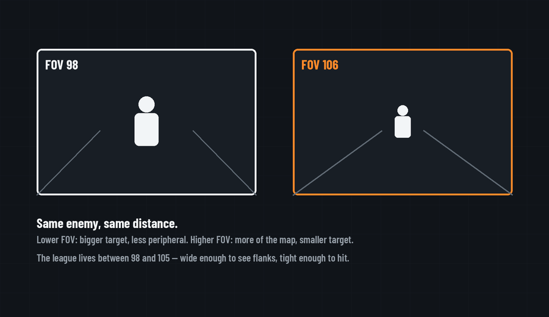

FOV is the most-copied setting after sensitivity, and the one where the tradeoff is easiest to actually see.

Field of view sets how many degrees of the world fit on your screen. Push it higher and you see more — flanks, lane edges, movement in your periphery — but everything shrinks, including the enemy you're shooting. Pull it lower and targets get bigger while your awarenessnarrows to a tunnel. Neither direction is free; the setting is a slider between information and target size.
Across every tracked player the CDL runs 98 to 107, with 43 of the 45 confirmed profiles inside 98–105. That is a strikingly narrow band out of the full range the menu offers. Role accounts for part of the spread. SMG players skew higher on average, because their fights happen up close on tight angles, where seeing more of what is directly in front of them is worth more than picking anything out at distance. AR players skew lower for the opposite reason: pulling FOV down makes an enemy read larger on screen at range, and range is where more of their gunfights are decided. Read that as a tendency rather than a rule: plenty of players run against it, and eyesight, monitor size and how far you sit from the screen move the number as much as role does. Check any team page and you'll usually find both ends of the band on the same roster.
Two things matter more than the exact number. First, FOV interacts with sensitivity — raising FOV makes your sens feel slower (same rotation covers more visual ground), so change one at a time. Second, consistency beats optimization here like everywhere: pick something in the 98–105 band, give it a full week before judging, and stop moving it. If your aim feels off after a FOV change, that's usually the sens interaction, not the FOV itself.